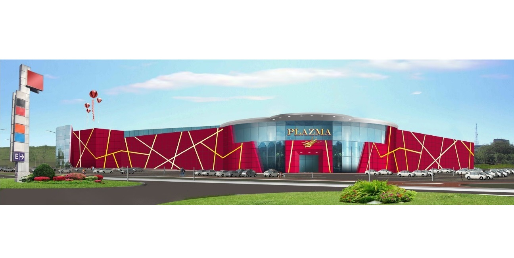

                <section class="common-section object-section select_fanc">
            <div class="common-white-wrap">
                <h1 class="object-title">Многофункциональный комплекс «PLAZMA»</h1>
                <div class="galleria-wrap">
                    <div class="fotorama" data-fit="cover" data-width="1600"
                         data-arrows="true" data-ratio="18/9"
                         data-max-width="100%" data-nav="thumbs"
                         data-thumbheight="64" data-allowfullscreen="true">
                                                    
                                            </div>
                </div>
                <div class="additional-content-wrap">
                    <p><strong>Сдача объекта:</strong><br/> ноябрь 2018 г.</p>
                    <p><strong>Общая площадь:</strong><br/>40 000&nbsp;м²</p>
                    <p><strong>Адрес:</strong><br/> г. Мурманск, ул. Рогозерская, д.8</p>
                </div>
                <div class="main-content-wrap">
                    <p>Проектирование, строительство и ввод в эксплуатацию многофункционального комплекса «PLAZMA» (общая площадь здания 40 000 м2 с возможным расширением в будущем).<br />
2 этажа: на 1м этаже устройство Гипермаркета, на 2м этаже &#8212; бутики, магазины и развлекательная зона с кинотеатром.</p>
<p>Фасад торгового центра оформлен облицовочными панелями активного цвета и &#171;разрезан&#187; всполохами цвета. &#171;Плавящееся вещество&#187; &#8212; плазма &#8212; притягивает взгляд динамикой световых линий, особенно в ночное время. Световые панели представляют из себя акриловый короб, внутри которого располагается диодный шнур. Подсветка может плавно и циклично менять цвет: от светло-желтого к тепло-желтому, от оранжевого &#8212; к красному.</p>
                </div>
            </div>
        </section>
    